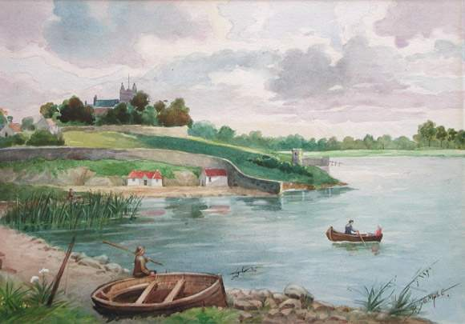

|
|
Duddingston Loch, Edinburgh - by D.F.Semple

... and a photograph in September 2007 (which should have been slightly further to the right)
|
All photographic images in pages within the domain astoft.uk are copyright the website owner 2001 or later unless otherwise stated. Email contact above. Full size 3megapixel originals are available for approved purposes. |